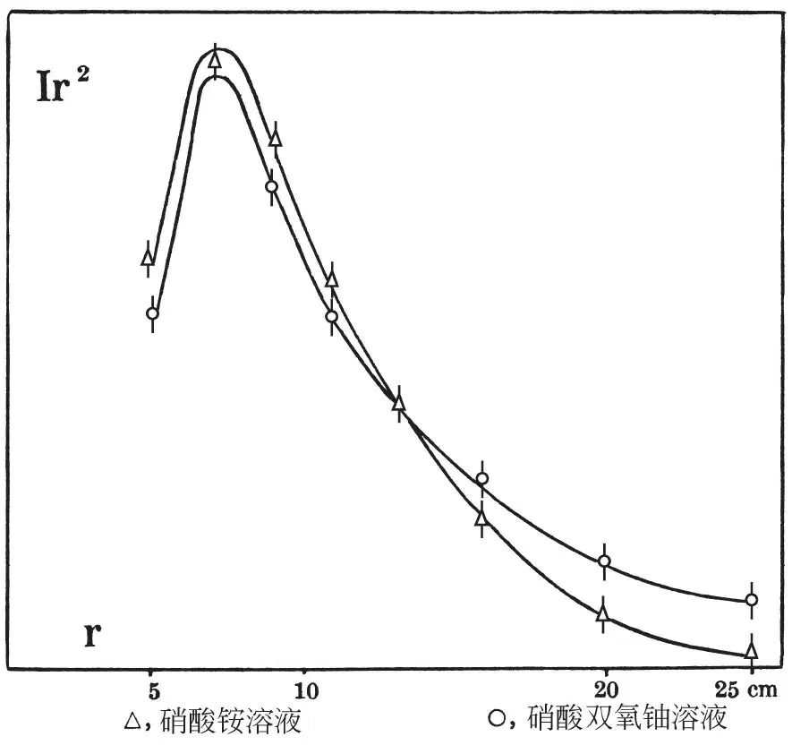

英文
英文冯·哈尔班等
编者按
最近的实验显示由中子碰撞触发的铀核或钍核爆炸释放出相当多的能量。释放能量的链式反应发生的可能性依赖于这个过程是否释放更多的中子。本文中，汉斯·冯·哈尔班、弗雷德里克·约里奥和卢·科瓦尔斯基称实验给出了肯定答案。他们用中子轰击硝酸铵和硝酸双氧铀两种物质，对观测到的慢中子数目随距离的变化进行测量。在两种物质中产生的差异无疑是因为铀核的存在和在裂变中产生的额外中子。关于中子能量他们能讲得很少，但是这些观测是迈向持续核裂变研究的一步。 英文
最近的实验[1,2]已经揭示了存在一种新的核反应：用中子轰击铀和钍会引发核爆炸，核分裂为电荷和质量较小的粒子，同时在这个过程中释放了相当大的能量。假设一次分裂仅产生两个粒子，则铀核的质量和电荷必定在两个更轻的核之间分配，与带有相同核电荷的最重的稳定同位素相比，两个轻核含有较多的中子。（例如，分裂为98Rb和141Cs意味着在两个核子中，第一个核子多出了11个中子，第二核子多出了8个中子。）似乎存在着两种可能性来消除这些过剩中子。通过发射β射线，一个中子转变为一个质子，这样就减少了两个单位的过剩中子；在上述给出的例子中，分别需要相继5次和4次β放射来恢复中子–质子的稳定率。实际上，已观测到的爆炸产物是具有β活性的，并且已经记录到了几个活性周期。因此，至少有一部分过剩的中子必定是通过这种方式去除的。另一种可能的过程是中子以部分爆炸产物的形式被直接释放，或从处于激发态的生成核中“蒸发”掉。 英文
为了找到这类次级现象的某些证据，我们研究了Ra γ-Be光中子在1.6摩尔硝酸双氧铀溶液和1.6摩尔硝酸铵溶液中的减速所产生的热中子的密度分布（这两种溶液中的氢含量只相差2%）。将Ir2作为r的函数绘图（其中r是源点与给定点之间的距离，I是热中子在相同点的局部密度，通过镝探测器中感生到的放射性进行测量），图中所得曲线的面积与Q·τ成正比，Q是每秒由中子源发射出的或在溶液中形成的中子数，τ是中子被俘获之前在溶液中度过的平均时间[3,4]。将任何其他不产生中子的原子核放入溶液中将会增加中子被俘获的概率，因此时间τ和面积也会相应减小。然而，如果溶液中的这些核是产生中子的，那么Q将更大，曲线的面积也将趋于增大。由面积的实际增大所表明中子生成的证据将仅在以下情况中才能获得，即由Q（中子生成）所造成的增益比由时间τ（中子俘获）所导致的损耗大的情况。我们可以通过各种方式来分别研究这项损耗，因为其已经表明[5]，仅仅是通过俘获，或通过增加溶液中的氢含量而引入的核只通过一种特定的方式来影响密度曲线的形状，那么将原始曲线的所有横坐标乘上一个合适的因子，而将纵坐标乘上另一个合适的因子，修正的曲线总能与其相吻合。 英文
附图显示了得到的两条曲线。在与源距离较近的位置，硝酸铵溶液中的中子密度大于硝酸双氧铀溶液中的密度；但在距离大于13厘米的位置时，情况则相反。换言之，在硝酸双氧铀溶液中中子密度随距离的减小明显较为缓慢。 英文

观测到这样的差别一定是由铀的存在所致。因为这两条曲线不能通过上述修正而重合，所以铀核不仅仅起俘获的作用；由铀核所产生的弹性漫射将会起到相反的效果：它会“缩短”横坐标，而不是延长横坐标。因此，当距离超过13厘米时硝酸双氧铀曲线所示的密度超量，必定会被当作中子是由初级中子与铀核之间的相互作用的产物的证据。熟知的（n,2n）型的反应是被排除在外的，这是由于对于这类反应而言我们的初级中子的能量太小了（90%的Ra+Be光中子的能量小于0.5兆电子伏，其余的10%小于1兆电子伏）。 英文
实验的精度不允许我们对硝酸双氧铀曲线中面积的微小增加（与硝酸铵曲线比较）赋予任何含义，这样的增加是我们将曲线向距离更大的方向外推时得到的。在任何情况下，假设由于中子产生造成的密度增量等于在r=25厘米处观测到的整个曲线的增量，则可得到中子产生的截面下限；这个极限肯定在实际值之下，为6×10－25平方厘米。 英文
我们的测量还无法给出关于所产生中子的能量的信息。如果在这些中子之中，某些中子具有的能量超过2兆电子伏，我们有望通过一个（n,p）过程来探测它们，例如，通过32S(n,p)32P反应。初级中子源仍然为Ra γ-Be的这种实验正在进行之中。 英文
我们所观测的现象使实现产生外能变换链向前迈进了一步，这个意义是很明显的。然而，为了建立这样的一个链条，每吸收一个中子，都必须再产生一个以上的中子。看起来事实就是如此，因为释放一个中子的截面似乎大于产生一次爆炸的截面。采用各种不同浓度的溶液进行的实验将给出该问题的相关信息。 英文
（沈乃澂 翻译；王乃彦 审稿）